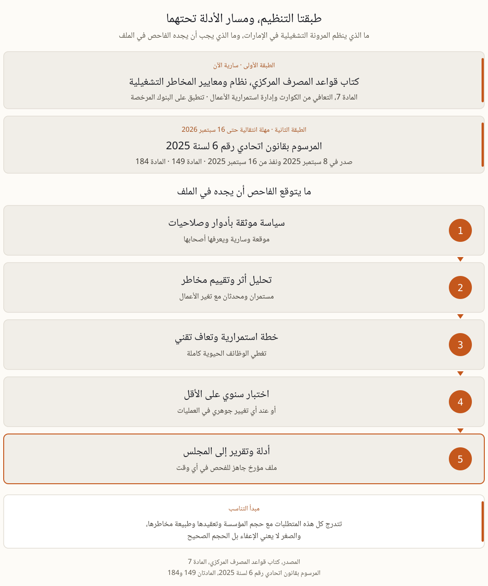

المرونة التشغيلية أمام المصرف المركزي، ما الذي يجب أن يكون جاهزا قبل الزيارة الرقابية
المرونة التشغيلية في الإمارات لا يحكمها نص واحد بل طبقتان، كتاب قواعد المصرف المركزي بمتطلباته الصريحة في المادة 7، والمرسوم بقانون اتحادي رقم 6 لسنة 2025 بمهلة انتقالية تنتهي في 16 سبتمبر 2026.
طبقتان متراكبتان لا طبقة واحدة
السؤال الذي يفتح أول اجتماع بعد وصول إشعار الفحص بسيط، أين هذا مكتوب بالضبط؟ والجواب أنه مكتوب في موضعين. الطبقة الأولى كتاب قواعد المصرف المركزي، وتحديدا نظام ومعايير المخاطر التشغيلية السارية على البنوك المرخصة، وفيها المادة 7 الخاصة بالتعافي من الكوارث وإدارة استمرارية الأعمال. وهي تشترط سياسة موثقة تحدد الأدوار والصلاحيات، وتحليل أثر وتقييم مخاطر مستمرين، وخطة استمرارية أعمال موثقة، واختبارا سنويا على الأقل أو عند أي تغيير جوهري في العمليات. والطبقة الثانية المرسوم بقانون اتحادي رقم 6 لسنة 2025، الصادر في 8 سبتمبر 2025 والنافذ من 16 سبتمبر 2025، وقد حل محل قانون المصرف المركزي لسنة 2018 وقانون التأمين لسنة 2023 في إطار موحد. وسع دائرة الخاضعين لتشمل البنوك وشركات التأمين ومزودي خدمات الدفع والممكنين التقنيين، وعزز صلاحيات الرقابة والفحص، وألزم في المادة 149 بآليات لمنع الاحتيال وبإخطار العملاء فورا عند الاختراقات الأمنية. وتمنح المادة 184 مهلة انتقالية سنة واحدة، حتى 16 سبتمبر 2026، لتسوية الأوضاع وفق القانون الجديد، مع صلاحية تقديرية للمصرف المركزي بالتمديد. ومن يبني خطته على احتمال التمديد يتخذ قرارا يصعب تبريره أمام لجنة التدقيق.
المادة 7 كما تقرأ في غرفة الفحص لا في المكتب
الفرق بين قراءة المادة في المكتب وقراءتها في غرفة الفحص هو الفرق بين النص والدليل. الفاحص لا يسأل هل لديكم سياسة، بل يطلب النسخة الموقعة ويقارن أسماءها بأسماء من يشغلون المواقع اليوم.
سياسة موثقة. أهداف ونهج وأدوار مسماة تملك صلاحية التصرف، موقعة وسارية ويعرف أصحابها أنهم فيها.
تحليل أثر وتقييم مخاطر مستمران.تحليل الأثر يحدد الوظائف الحيوية ويقيس أثر التعطل عبر الزمن، ويحدث مع تغير الأعمال لا مرة واحدة.
خطة استمرارية موثقة.خطة تحقق أهداف السياسة وتغطي الوظائف الحيوية من طرفها إلى طرفها.
اختبار سنوي كحد أدنى. دليل على أن الموظفين ينفذون خطط الطوارئ فعلا، وأن أهداف زمن التعافي وأزمنتها تتحقق لا أنها مكتوبة وحسب.
التعافي من الكوارث. ترتيبات استعادة تقنية تحد من الخسائر في الاضطراب الشديد، لا موقع بديل في عقد لم يجرب أحد التحويل إليه.
التناسب. تتدرج المتطلبات مع حجم المؤسسة وتعقيدها وطبيعة مخاطرها، والصغر لا يعني الإعفاء بل الحجم الصحيح.
من يقع داخل النطاق
تصور رئيس الامتثال في مؤسسة صغيرة أن الحديث كله عن البنوك الكبيرة تصور مريح ومكلف.
البنوك المرخصة. يسري عليها إطار المخاطر التشغيلية كاملا بما فيه المادة 7، دون تفريق بين تقليدي وإسلامي.
شركات التأمين. جمعها إطار 2025 الموحد تحت مظلة واحدة، وتوقعات المرونة تتبع الرقابة أينما ذهبت.
مزودو خدمات الدفع والتقنية المالية والممكنون التقنيون. أدخلوا حديثا في إطار 2025، ومن كان داخل سلسلة المعاملة وصلته أسئلة المرونة برخصة مصرفية أو بغيرها.
الموردون الحيويون لكل ما سبق. رقابة الإسناد الخارجي تجعل استمراريتكم بندا في ملف امتثال عميلكم.

الطبقتان اللتان تخضعون لهما، وما يجب أن يجده الفاحص تحتهما في الملف.
نمطان يتكرران في ملاحظات الرقابة
تتكرر ملاحظات الرقابة في المنطقة بشكلين. الأول اختبار لا يثبت شيئا، جلسة نقاش حول طاولة تنتهي بمحضر من صفحة واحدة ونتيجة واحدة، سارت الأمور على ما يرام. لا زمن مسجل لبدء الاستجابة، ولا قياس لكم استغرقت أول معاملة حتى نفذت من الموقع البديل، ولا ملاحظة أغلقت بتاريخ ومسؤول باسمه. والثاني تحليل أثر تحول إلى أرشيف، فالمصرف نقل مدفوعاته إلى مزود جديد وأطلق قناتين رقميتين وأسند معالجة البطاقات إلى طرف خارجي، بينما ما زال تحليل الأثر يصف أنشطة سبقت ذلك كله. النمطان يظهران للفاحص خلال أقل من ساعة، إذ يكفي أن يسأل موظفا في الصف الثاني ماذا تفعل في أول عشر دقائق.
اثنا عشر شهرا حتى 16 سبتمبر 2026
المهلة التي منحتها المادة 184 تكفي لبناء نظام يعمل، لكنها لا تكفي لبنائه مرتين. وهذا ترتيب يحترم تسلسل الاعتمادية ويجنب إعادة العمل.
فحص فجوات مقابل المادة 7 وتوقعات المرونة. من أسبوعين إلى ثلاثة، وكل فجوة مسعرة بكلفة التوقف وباحتمال أن تصير ملاحظة رقابية مكتوبة.
تحديث تحليل الأثر. وظائف حيوية بأسمائها، وأثر يقاس عبر الزمن، وأهداف تعاف تبلغها ترتيباتكم الحالية فعلا، والمنهجية في صفحتنا عن تحليل أثر الأعمال.
إصلاح الخطة لا المجلد. صلاحيات الساعات الأولى، وشجرة الاتصال، والحلول اليدوية المؤقتة، واستعادة الأنظمة، في وثيقة قصيرة ينفذها مناوب ليل دون أن يتصل بأحد.
اختبروا كما يختبر الفاحص. سيناريو واقعي بتوقيت وملاحظات وإجراءات تغلق بتواريخ. تقرير تمرين واحد جيد يجيب عن معظم أسئلة الفحص قبل أن تطرح.
ارفعوا التقرير إلى المجلس. مؤشرات مرونة يراها المجلس شهريا لا عرضا سنويا، وما يطلبه المجلس فعلا في صفحتنا عن دور مجلس الإدارة.
أربعة أسئلة تتكرر في قاعة المجلس
ما الذي يتغير بالضبط في 16 سبتمبر 2026؟ تنتهي المهلة الانتقالية التي منحتها المادة 184، فعلى الجهات الداخلة حديثا في النطاق أو المطالبة بتغييرات أن تكون قد سوت ترخيصها وامتثالها بحلول ذلك التاريخ، مع صلاحية تقديرية للمصرف المركزي بالتمديد. وانتظار التمديد ليس خطة.
نحن مؤسسة صغيرة، هل ينطبق هذا علينا؟ نعم، بتناسب. كتاب القواعد يدرج المتطلبات صراحة مع حجم المؤسسة وتعقيدها وطبيعة مخاطرها، والمؤسسة الصغيرة تحتاج نظاما أصغر لكنه حقيقي ومختبر.
وما علاقة هذا بالمعيار NCEMA 7000؟ المعيار 7000 معيار وطني لاستمرارية الأعمال يخاطب الجهات على اتساعها، ومتطلبات المصرف المركزي تنظيم قطاعي للمؤسسات المالية. والتخصصان متداخلان، ونظام واحد مبني وموثق جيدا يخدمهما معا، وتفصيله في دليلنا عن المعيار 7000.
ما الذي نجهزه قبل الزيارة؟ السياسة موقعة، ومخرجات تحليل الأثر بتاريخها الأخير، وخطة الاستمرارية، وتقرير آخر اختبار بتوقيتاته وملاحظاته، وسجل الإجراءات المغلقة، وتقارير المرونة المرفوعة إلى المجلس، كلها مؤرخة.
ما يستحق أن يقال للمجلس بصراحة
الطبقتان لا تطلبان مجلدا أجمل بل نظاما يعمل ويترك أثرا موثقا خلفه. والمؤسسة التي تبني هذا التسلسل مرة واحدة بشكل صحيح، من سياسة إلى تحليل أثر إلى خطة إلى اختبار إلى تقرير للمجلس، تجد الفحص الرقابي مراجعة لملف قائم لا مشروعا يبدأ بعد وصول الإشعار. وهذا التسلسل هو ما تغطيه وحدات برنامج ERGP. أما التاريخ الذي يجب أن يظهر في تقويم المجلس اليوم فهو 16 سبتمبر 2026.
المصادر، كتاب قواعد المصرف المركزي، نظام ومعايير المخاطر التشغيلية، المادة 7، rulebook.centralbank.ae · المرسوم بقانون اتحادي رقم 6 لسنة 2025 الصادر في 8 سبتمبر 2025، uaelegislation.gov.ae · تحليلات قانونية منشورة في 2025.
حوكمة المرونة التي يطلبها المصرف المركزي هي مادة برنامج ERGP، أول شهادة في حوكمة المرونة متاحة بالكامل باللغة العربية وبالإنجليزية أيضا. ست وحدات وستة مخرجات عملية ومشروع ختامي يناقش أمام ممتحن وشهادة قابلة للتحقق.